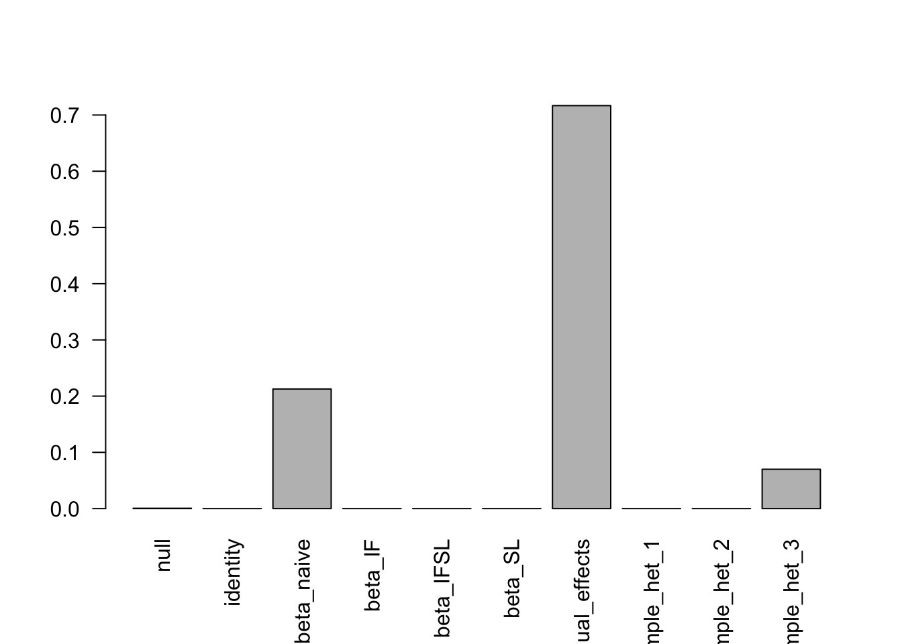

Last updated: 2019-11-21
Checks: 6 1
Knit directory: mash-single-cell-rnaseq/
This reproducible R Markdown analysis was created with workflowr (version 1.5.0). The Checks tab describes the reproducibility checks that were applied when the results were created. The Past versions tab lists the development history.
Great! Since the R Markdown file has been committed to the Git repository, you know the exact version of the code that produced these results.
Great job! The global environment was empty. Objects defined in the global environment can affect the analysis in your R Markdown file in unknown ways. For reproduciblity it’s best to always run the code in an empty environment.
The command set.seed(20191120) was run prior to running the code in the R Markdown file. Setting a seed ensures that any results that rely on randomness, e.g. subsampling or permutations, are reproducible.
Great job! Recording the operating system, R version, and package versions is critical for reproducibility.
Nice! There were no cached chunks for this analysis, so you can be confident that you successfully produced the results during this run.
Using absolute paths to the files within your workflowr project makes it difficult for you and others to run your code on a different machine. Change the absolute path(s) below to the suggested relative path(s) to make your code more reproducible.
| absolute | relative |
|---|---|
| /Users/nicholeyang/Desktop/Rotation/mash-single-cell-rnaseq/data/top_snps.RData | data/top_snps.RData |
Great! You are using Git for version control. Tracking code development and connecting the code version to the results is critical for reproducibility. The version displayed above was the version of the Git repository at the time these results were generated.
Note that you need to be careful to ensure that all relevant files for the analysis have been committed to Git prior to generating the results (you can use wflow_publish or wflow_git_commit). workflowr only checks the R Markdown file, but you know if there are other scripts or data files that it depends on. Below is the status of the Git repository when the results were generated:
Ignored files:
Ignored: .DS_Store
Ignored: .Rhistory
Ignored: .Rproj.user/
Untracked files:
Untracked: data/top_snps.RData
Untracked: top_snps.RData
Unstaged changes:
Modified: analysis/RNA_seq_process2.Rmd
Note that any generated files, e.g. HTML, png, CSS, etc., are not included in this status report because it is ok for generated content to have uncommitted changes.
These are the previous versions of the R Markdown and HTML files. If you’ve configured a remote Git repository (see ?wflow_git_remote), click on the hyperlinks in the table below to view them.
| File | Version | Author | Date | Message |
|---|---|---|---|---|
| Rmd | 87a59f6 | Nicholeyang0215 | 2019-11-21 | wflow_publish(“analysis/mashr_application.Rmd”, verbose = TRUE) |
Remarks:
Mashr re-estimate the effect size of SNPs, incorporating information across conditions.
Ways to access the fit. Log-likelihood and others?
Seems that result doesn’t make sense. Log-likelihood very large.
library(ashr)
library(mashr)load("/Users/nicholeyang/Desktop/Rotation/mash-single-cell-rnaseq/data/top_snps.RData")
dt_beta <- top_snps[,c("beta_naive", "beta_IF", "beta_IFSL", "beta_SL")]
dt_pval <- top_snps[,c("p_nominal_naive", "p_nominal_IF", "p_nominal_IFSL", "p_nominal_SL")]
dt_beta = as.matrix(dt_beta)
dt_pval = as.matrix(dt_pval)
head(dt_beta) beta_naive beta_IF beta_IFSL beta_SL
1 -0.3370090 -0.4037950 -0.0941426 -0.2029850
2 -0.0743763 -0.0419751 -0.0325720 -0.0214099
3 -0.0786190 -0.0507808 -0.0591935 -0.0275128
4 0.0826863 -0.0162367 -0.0407589 0.0786256
5 -0.4299870 -0.3545930 -0.2523280 -0.2987360
6 -0.3760470 -0.0694328 0.0700316 -0.0902658head(dt_pval) p_nominal_naive p_nominal_IF p_nominal_IFSL p_nominal_SL
1 0.00061327 0.00140049 0.5007650 0.0545107
2 0.00121529 0.08250130 0.1340060 0.3738330
3 0.00117232 0.04579800 0.0610855 0.5071570
4 0.00256488 0.68539900 0.5733360 0.0466930
5 0.03554660 0.03811650 0.0227163 0.0728410
6 0.01376920 0.37466200 0.2537470 0.5845360str(dt_beta) num [1:15678, 1:4] -0.337 -0.0744 -0.0786 0.0827 -0.43 ...
- attr(*, "dimnames")=List of 2
..$ : chr [1:15678] "1" "2" "3" "4" ...
..$ : chr [1:4] "beta_naive" "beta_IF" "beta_IFSL" "beta_SL"str(dt_pval) num [1:15678, 1:4] 0.000613 0.001215 0.001172 0.002565 0.035547 ...
- attr(*, "dimnames")=List of 2
..$ : chr [1:15678] "1" "2" "3" "4" ...
..$ : chr [1:4] "p_nominal_naive" "p_nominal_IF" "p_nominal_IFSL" "p_nominal_SL"dt_mash = mash_set_data(dt_beta, Shat = NULL, pval = dt_pval)
head(dt_mash$Bhat) beta_naive beta_IF beta_IFSL beta_SL
1 -0.3370090 -0.4037950 -0.0941426 -0.2029850
2 -0.0743763 -0.0419751 -0.0325720 -0.0214099
3 -0.0786190 -0.0507808 -0.0591935 -0.0275128
4 0.0826863 -0.0162367 -0.0407589 0.0786256
5 -0.4299870 -0.3545930 -0.2523280 -0.2987360
6 -0.3760470 -0.0694328 0.0700316 -0.0902658head(dt_mash$Shat) beta_naive beta_IF beta_IFSL beta_SL
1 0.09837735 0.12640121 0.13982546 0.10556982
2 0.02298923 0.02417428 0.02173655 0.02407456
3 0.02422377 0.02542536 0.03160567 0.04148048
4 0.02741970 0.04008005 0.07237725 0.03952874
5 0.20455348 0.17100359 0.11075895 0.16653569
6 0.15266426 0.07820994 0.06136150 0.16508883# Step2: set up covariance matrix
U.c = cov_canonical(dt_mash)
print(names(U.c))[1] "identity" "beta_naive" "beta_IF" "beta_IFSL"
[5] "beta_SL" "equal_effects" "simple_het_1" "simple_het_2"
[9] "simple_het_3" # Step3: fit model
m.c = mash(dt_mash, U.c) - Computing 15678 x 253 likelihood matrix.
- Likelihood calculations took 2.62 seconds.
- Fitting model with 253 mixture components.
- Model fitting took 15.28 seconds.
- Computing posterior matrices.
- Computation allocated took 13.21 seconds.# Step4: extract posterior summarize
head(get_lfsr(m.c)) # local false sign rates beta_naive beta_IF beta_IFSL beta_SL
1 1.461406e-05 0.001824021 0.004385345 0.002141932
2 1.876247e-04 0.099080350 0.099233110 0.099949419
3 3.520635e-05 0.016831278 0.016881393 0.018060472
4 2.629536e-03 0.495295005 0.494371262 0.468454622
5 4.657397e-04 0.001811972 0.001688937 0.001921296
6 7.303887e-02 0.855488753 0.873244307 0.858295958head(get_pm(m.c)) beta_naive beta_IF beta_IFSL beta_SL
1 -0.24998712 -0.250345427 -0.243688943 -0.245792041
2 -0.04582012 -0.038363102 -0.038302041 -0.038231226
3 -0.05954638 -0.058071103 -0.058122522 -0.057942265
4 0.06609349 0.024188691 0.024158574 0.027910831
5 -0.26644629 -0.265655730 -0.264519032 -0.265028508
6 -0.19970374 -0.005753663 -0.002717302 -0.005782514head(get_psd(m.c)) beta_naive beta_IF beta_IFSL beta_SL
1 0.05799366 0.06082965 0.06221880 0.05897826
2 0.01624149 0.01686986 0.01685286 0.01691490
3 0.01488694 0.01620381 0.01625526 0.01650750
4 0.02791045 0.02987130 0.03139002 0.03048489
5 0.07604640 0.07563894 0.07428845 0.07540395
6 0.13864721 0.02489209 0.02284952 0.02834736head(get_significant_results(m.c)) 661 2075 2694 3191 3304 3305
661 2068 2687 3184 3297 3298 print(length(get_significant_results(m.c)))[1] 15450print(get_pairwise_sharing(m.c, factor=0)) beta_naive beta_IF beta_IFSL beta_SL
beta_naive 1.0000000 0.9922977 0.9803883 0.9858900
beta_IF 0.9922977 1.0000000 0.9977311 0.9984487
beta_IFSL 0.9803883 0.9977311 1.0000000 0.9989194
beta_SL 0.9858900 0.9984487 0.9989194 1.0000000print(get_loglik(m.c))[1] 39976.75print(get_estimated_pi(m.c)) null identity beta_naive beta_IF beta_IFSL
0.0006367433 0.0000000000 0.2126963603 0.0000000000 0.0000000000
beta_SL equal_effects simple_het_1 simple_het_2 simple_het_3
0.0000000000 0.7166936937 0.0000000000 0.0000000000 0.0699732027 barplot(get_estimated_pi(m.c),las = 2)
sessionInfo()R version 3.5.1 (2018-07-02)
Platform: x86_64-apple-darwin15.6.0 (64-bit)
Running under: macOS 10.15
Matrix products: default
BLAS: /Library/Frameworks/R.framework/Versions/3.5/Resources/lib/libRblas.0.dylib
LAPACK: /Library/Frameworks/R.framework/Versions/3.5/Resources/lib/libRlapack.dylib
locale:
[1] en_US.UTF-8/en_US.UTF-8/en_US.UTF-8/C/en_US.UTF-8/en_US.UTF-8
attached base packages:
[1] stats graphics grDevices utils datasets methods base
other attached packages:
[1] mashr_0.2.21.0641 ashr_2.2-38
loaded via a namespace (and not attached):
[1] Rcpp_1.0.2 plyr_1.8.4 compiler_3.5.1
[4] later_1.0.0 git2r_0.26.1 highr_0.7
[7] workflowr_1.5.0 iterators_1.0.12 tools_3.5.1
[10] digest_0.6.18 evaluate_0.13 lattice_0.20-38
[13] rlang_0.4.0 Matrix_1.2-15 foreach_1.4.7
[16] yaml_2.2.0 parallel_3.5.1 mvtnorm_1.0-11
[19] xfun_0.4 stringr_1.4.0 knitr_1.21
[22] fs_1.3.1 rprojroot_1.3-2 grid_3.5.1
[25] glue_1.3.0 R6_2.4.0 rmarkdown_1.11
[28] mixsqp_0.1-97 rmeta_3.0 magrittr_1.5
[31] whisker_0.3-2 backports_1.1.3 promises_1.1.0
[34] codetools_0.2-16 htmltools_0.4.0 MASS_7.3-51.1
[37] assertthat_0.2.1 abind_1.4-5 httpuv_1.5.2
[40] stringi_1.3.1 doParallel_1.0.15 pscl_1.5.2
[43] truncnorm_1.0-8 SQUAREM_2017.10-1